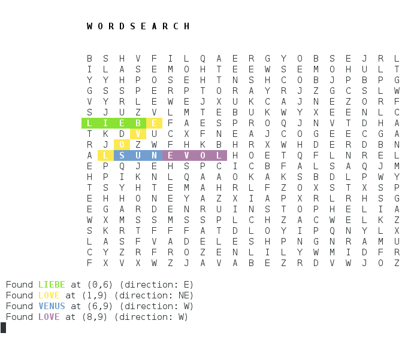
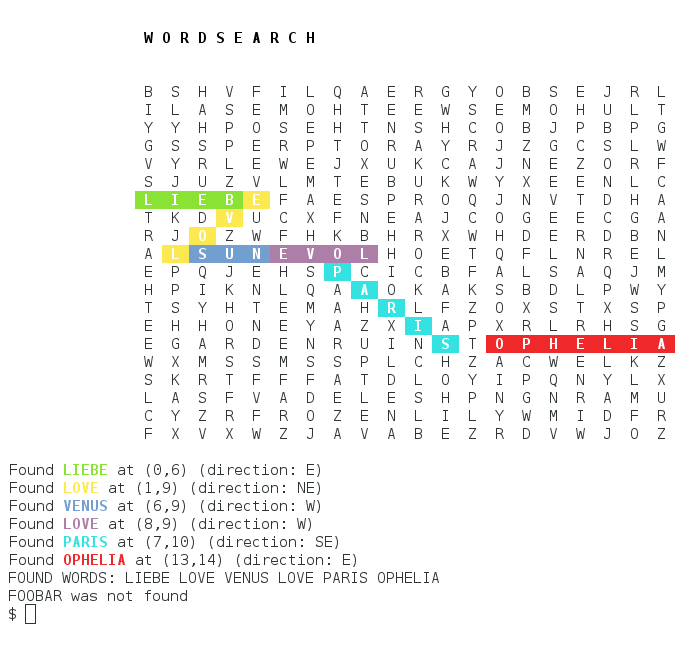

20 Feb 2018
Wordsearch
Topics: 2-D Arrays in Bash, Shell Substrings, Local Variables, tput (for colour and positioning the cursor), Out-by-One ErrorsThe script here is just short of 200 lines long, which is my rule-of-thumb for the longest that a single shell script should be. After that point, it makes a lot more sense to break it down into more manageable chunks, but this (just) fits in to the 200-line guideline.
It's not here because it's beautiful code, but the opposite: It takes on a few things that the shell is not particularly well suited to, in particular:
- Two-Dimensional Arrays in Shell Scripts (they don't exist)
- Indexing from zero, out-by-one errors, and the resuling observation, that:
- Even simple mathematical transformations can be awkward and cumbersome.
- Substrings are not as elegant to deal with as in many languages, too.
- Functions can only return one value, and that can only be an integer 0-255.
Hopefully this script brings some of these awkward things under the spotlight, and helps to show how they can be dealt with in your shell scripts.
Also, it solves your Word Search puzzles for you :-)
Contents
The Overview
The script reads in a wordsearch puzzle in the form of a text file, and you pass words for the script to search for. It works its way around the grid from top left to bottom right and on each square it goes through all 8 possible directions (Up, Down, Left, Right, and the diagonals - it refers to these 8 directions as North, South, East, West, and so on), looking for matches to the words. So for a given square, if the letter there is "A", It starts by looking upwards. So the script goes through the list of words it's looking for, and when it finds one which starts with "A" - maybe it's got the word "Apple" on its list of words to search for, so that function calls itself again, telling itself to look for "PPLE" heading upwards from the starting square. If that function finds the second letter ("P"), it will call itself again, looking for "PLE" heading upwards. If that finds "P", it will call itself to look for "LE", which will in turn call itself looking for "E". If it finds that, then the final function call returns "0" (zero) indicating "Success", which ripples down through the others, and the original function returns "0" (zero), telling the main script that it has found the word "Apple" in the upwards direction from the current starting point.
If that happens, the main script calls another function to highlight the newly-found word on the display of the wordsearch grid, and it also displays a message under the wordsearch grid saying what word it found, where it starts, and in what direction the word is going.
Next it looks for any other words beginning with "A", and does the same with them.
Then, from the same starting point, it goes through all of the other directions it could take, and looks for all the words in those directions.
Once it has done that, it moves on to the next location in the wordsearch grid, and does it all over again.
None of this is rocket science, in fact it's probably the dumbest, most simple implementation possible of a wordsearch algorithm. I haven't even looked into other algorithms for this part of the problem; the reason for this article is to investigate the various problems encountered when processing strings and presenting data in a shell script. Because none of these are things that are easy to do in shell scripts. And that is why I want to tackle them here.
Sample Run
This sample uses a wordsearch used by the forgeofempires.com online game for their Valentine's Day competition in February 2018.
It is called as $ ./wordsearch.sh foe_wordsearch.txt LOVE PARIS VENUS FOOBAR LIEBE OPHELIA, telling the script to use the foe_wordsearch.txt file, and look for the words LOVE, PARIS, VENUS, FOOBAR, LIEBE and OPHELIA. It will find the ones it can, and highlight them in a unique* colour.
First the script displays the grid, and starts looking for words. This screenshot shows it after it has found the words LIEBE, LOVE, VENUS and another LOVE. Each new word is highlighted in a different colour.
You will notice that they do overlap, but that is the nature of wordsearches. Highlighting double-used letters would be an interesting upgrade for this script.
As it finds each word, it lists it (with its location and direction) at the bottom of the screen. It uses the same colour as it used to highlight the word in the main grid. Once the script has finished, it lists all of the words it found, as well as the words it was asked to find but did not find:
This took about 12 seconds to run on my PC; the shell really is not a fast language for doing such tasks. Python, C, or just about anything else could do it faster. But this article is about how to make the Shell do things that it isn't particularly well suited to. This script could be more optimised; running searches in parallel would be one obvious speedup, but the shell will always be slow at certain tasks.
Notice that when words overlap, the colour-coding is somewhat hijacked; answers on a postcard please, for suggestions to solve that particular problem!
*The colours aren't unique; it uses six colours, then starts again. However, this is better than showing them all in monochrome, or highlighting them all in the same colour, if only for pedagogical reasons.
The Implementation Details
The functionality itself isn't very useful - let's face it, if you're reading this website, you've probably grown out of doing word searches. But it is useful, partly for the reasons listed above, in that it shows some of the less easy things to do in a shell script, and as such it's a useful tool for investigating them, and how to write some hopefully readable and maintainable code even when the problem set doesn't particularly suit the language in question.
Two Dimensional Arrays
The Bash shell does not have multi-dimensional arrays. So we are stuck with one-dimensional arrays. For this solution, where we need to model a 2-D grid of letters in a Word Search puzzle, this script flattens out the array, so that the following 3x4 grid is represented as a 12-element array, with indices from 0 to 11:
| (0,0) = 0 | (1,0) = 1 | (2,0) = 2 |
| (0,1) = 3 | (1,1) = 4 | (2,1) = 5 |
| (0,2) = 6 | (1,2) = 7 | (2,2) = 8 |
| (0,3) = 9 | (1,3) = 10 | (3,2) = 11 |
In the script below, the grid() function uses this (hopefully reasonably obvious) algorithm, to work out the index from the (x,y) coordinate pair:
let n=$((y * width)) let n=n+x
This takes the variable $width, which we set to be the width of the array. In the example above, width would be 3, because there are 3 columns in the table. It multiplies this by the value of y, to get the value of the left-hand cell on row y. Then it adds x to this value, to get the final answer.
For example, to work out that the index of (1,2) = 7 for the table above, take (y * width) + x = (2 * 3) + 1 = 7. The index in the 1-D-array for the 2-D location (1,2) is represented as 7. If the table was 5 columns wide, then (1,2) would be (2 * 5) + 1 = 11.
To be honest, this code could be implemented without arrays at all - the array of single characters is basically a string, so instead of ${letters[idx]} we could just have defined $letters as a string and used ${letters:{$idx}:1} to get a single-character substring. But the point of this is to show how 2-D arrays can be faked with a 1-D array. You may find yourself needing a 2-D array of words, integers, or whatever, in which case you would need an array. So here is that sample implementation.
Local Variables
A lot of the functions in this script use x and y variables. These can be declared local to a function via the local keyword. This ensures that whatever happens to that variable within the function, any other variables with the same name in other functions are not affected.
Substrings
Substrings are accessed via the syntax: ${word:3:2}, which will show 2 characters, starting with the 3rd, so if word=Linux then ${word:3:2} is ux, and ${word:1:3} is inu. This particular script only looks for single letters in a word, so it always ends in :1}.
If you don't provide a length, the variable will continue to the end of the word, so ${word:1:} is used on line 111 of the script below to trim off the first character of the word, turning "Linux" into "inux".
The way to express this makes sense once you realise that you are just replacing the index with the variable ${idx}, but it isn't particularly nice to look at: ${word:${idx}:1}:
word=Linux
for idx in 0 1 2 3 4
do
echo "Letter $idx of \"$word\" is: ${word:${idx}:1}"
done
Which displays this output:
Letter 0 of "Linux" is: L Letter 1 of "Linux" is: i Letter 2 of "Linux" is: n Letter 3 of "Linux" is: u Letter 4 of "Linux" is: x
Of course, we can't hard-code for idx in 0 1 2 3 4 because we'll be dealing with words of varying lengths. The seq tool generates a sequence of numbers, so for the above we can use: for idx in `seq 0 4`, which expands to the same thing. We will be using this method below.
Indexing from Zero and Out-By-One errors
The script deals with substrings in words, so ifword="Linux", then word[0]=L, word[1]=i, word[2]=n, word[3]=u and word[4]=x.
The length of $word (which we get from the ${#word} syntax, eg: word_length=${#word}), is 5. But we need to check indices 0 through 4. So to iterate through the letters in the word, we need to subtract 1 from ${#word}, to get 4. In most languages you would just use:
for idx in `seq 0 ${#word}-1`
But the shell can't do any mathematics at all, it needs to be told that it is dealing with an expression which it needs to evaluate. Two ways to do this are via the let keyword, or the $(( expression )) syntax:
word=Linux
for idx in `seq 0 $((${#word}-1))`
do
echo "word[$idx] = ${word:${idx}:1}"
done
Personally, I find it more legible to assign another variable than to have all those brackets:
word=Linux
let final_char=${#word}-1
for idx in `seq 0 $final_char`
do
echo "word[$idx] = ${word:${idx}:1}"
done
tput - controlling a terminal screen
The tput command is relatively obscure, but still very useful. It can set the text colour, background colour, turn bold text on or off, and move the cursor to any location on the screen.
This script makes use of nearly all of these facilities. You can read about tput in more detail here.
| tput bold | Enable bold text |
| tput smso | Enable "stand-out mode" text (i.e., reverse colours) |
| tput sgr0 | Set the text mode back to the default |
| tput setaf number | Set the text foreground colour to that associated with number |
| tput cup y x | Move the cursor to (x,y) (where (0,0) is the top-left of the display) |
The numbers for tput setaf are: 0 = Black, 1 = Red, 2 = Green, 3 = Yellow, 4 = Blue, 5 = Magenta, 6 = Cyan, 7 = White.
tput sends special "control character" messages to the terminal, so as well as using it as it is in the show_word() function (lines 131-144 below), you can also use it in an echo statement, by passing its output to echo. The script below does this at line 175:
echo "Found `tput setaf $colour``tput bold`$WORD`tput sgr0` at ($x,$y) (direction: $direction)"
One 'gotcha' with tput cup is that it takes the vertical (y) value first, followed by the horizontal (x) value. With cartesian coordinates, we are used to putting x before y, but tput cup does it the other way around.
The Script
Walking through the script section by section, we see how it comes together.
The first section just defines a couple of global variables, and a debug function (if you export DEBUG=1, it will send its working to stdout as it goes). This is achieved by adding >&2 on line 13.
1 #!/bin/bash
2 # Do a wordsearch
3 # Approx 42 seconds for 22 words on a 20x20 grid, 12 seconds for 5 words.
4
5 x_offset=15
6 y_offset=5
7 declare -a letters
8 colour=1
9
10 debug()
11 {
12 if [ "$DEBUG" = "1" ]; then
13 echo $@ >&2
14 fi
15 }
The read_file() function reads the letters in from the text file. read -n1 letter reads one character at a time into the $letter variable. The main action in this function is the line [ ! -z "$letter" ] && letters[idx++]=$letter. This checks that $letter is not zero length (! -z), because the read will read in newlines from the file as a character, but we don't want to include those in our array.
If the $letter is a real letter (and not a linebreak), then it sets letters[idx]=$letter. It uses a C-style postfix operator to also increment $idx as it does it. So when line 23 of the script is first executed, $idx is zero, but by the time line 23 has been executed, $idx is 1.
Finally, the read_file() function sets some global variables which will be useful later in the script. It uses wc to find the length and max width of the file. Because the grid is zero-indexed, if we have a 3x4 grid, $max_y will be 4; we want to count it from 0 to 3, so let max_y-=1 takes 1 away from max_y.
We do want to know the width in terms of numbers of columns, so we save that into a variable, $width. With a grid 3 columns wide, $width will be 3. Like max_y, max_x needs to be one less than this, so max_x is defined as width-1.
Note that when we use let or keyword, or the $(( expression )) syntax, there is no need to use the dollar ($) symbol to reference the value of a variable. It would be nice if the rules were consistent, but at least it looks a bit more C-like this way.
16
17 read_file()
18 {
19 local INPUT_FILE=$1
20 local idx=0
21 while read -n1 letter
22 do
23 [ ! -z "$letter" ] && letters[idx++]=$letter
24 done < $INPUT_FILE
25
26 max_y=`wc -l $INPUT_FILE | cut -d" " -f1`
27 let max_y-=1
28 width=`wc -L $INPUT_FILE | cut -d" " -f1`
29 let max_x=width-1
30 debug "Words is ${letters[*]}"
31 let answer_row=$max_y+$y_offset+2
32 }
The grid() function takes an (x,y) coordinate and displays the letter found at that place in the wordsearch grid. Shell functions can only return a single byte, and while it would be possible to return the byte corresponding to the ASCII code of the letter, it is much more straightforward to echo the result. The caller can then just grab the output from the function, using: letter=`grid $x $y`.
33
34 grid()
35 {
36 # Return the character at the grid position; first, squash a 2-D array to 1-D
37 local x=$1
38 local y=$2
39 local n
40 # Note: width is the count of characters; $max_x is one less than $width
41 let n=$((y * width))
42 let n+=x
43 echo ${letters[$n]}
44 }
The show_grid() function displays the initial grid. It uses $y_offset and $x_offset so that the grid is not shoved into the very top-left corner of the screen. This allows some room at the top for the "W O R D S E A R C H" header, and a bit of padding on the left hand side, too.
The details of the tput calls are explained above; the loops just work through the grid, and call the grid() function to display the letter at each location.
As it happens, because this function is going through the (one-dimensional) array from (0,0) to (max_x,max_y), it could just count through from ${letters[0]} to ${letters[400]}, but that technique is no good for the show_word() function, so we may as well use this method in both functions.
45
46 show_grid()
47 {
48 local x y
49 clear
50 echo;echo;tput bold
51 echo " W O R D S E A R C H"
52 tput sgr0
53 tput cup $y_offset 0
54 for y in `seq 0 $max_y`
55 do
56 printf "%${x_offset}s" " "
57 for x in `seq 0 $max_x`
58 do
59 echo -n " `grid $x $y` "
60 done
61 echo
62 done
63 }
The move() function is used for two purposes. First when walking around the grid to see if a given word
starts at the current location. Second, when a word has been identified, show_word() does it again, and adds highlighting.
The function returns two values; this is achieved via echoing the two values. We then read them in from a "Here String":
read x y <<< "`move $direction $x $y`". If the caller calls move NE 3 6, then move() will return "4 5" because to move the x cursor East means increasing it from 3 to 4, and moving the y cursor North means reducing it from 6 to 5.
The caller then reads these two values, and sets x=3 and y=4.
The end of the function checks if either x or y are less than zero, or greater than their max_* values. If they are, then we have moved outside of the grid, which is against the rules of the game. It returns the word "ERROR", so the caller must check if $x == "ERROR" before continuing.
64
65 move()
66 {
67 local dir=$1
68 local x=$2
69 local y=$3
70 case "$dir" in
71 "N") let y=y-1;;
72 "NE") let y=y-1 ; let x=x+1;;
73 "E") let x=x+1;;
74 "SE") let y=y+1 ; let x=x+1;;
75 "S") let y=y+1;;
76 "SW") let y=y+1 ; let x=x-1;;
77 "W") let x=x-1;;
78 "NW") let y=y-1 ; let x=x-1;;
79 esac
80 if [ $x -lt 0 ] || [ $y -lt 0 ] || [ $x -gt $max_x ] || [ $y -gt $max_y ]; then
81 echo "ERROR" # fell out of the grid
82 return
83 fi
84 echo $x $y
85 }
check_word() is the longest function in the script. It looks for valid words. The first two arguments are the (x,y) location to search from. The third is the direction (N, NE, E, SE, etc), and the fourth is the word to look for.
The function identifies the character at the current position ($currentchar) and the first letter of the word to search for (searchchar=${search_word:0:1}). If they are not the same, then it drops down to line 115 and returns 1 (to indicate failure) because it can't find the requested word from that position.
If the current character matches what is being looked for, it first checks if the $search_word is only one character long - if it is, then we have found the whole word. Return zero to indicate success (line 101).
If the current letter matches, and we have not yet found the complete word, we find ourselves at line 103. Move the cursor in the direction we've been told to search in. If we fall off the edge of the grid, then return 1 (failure). Otherwise, pass the rest of the word to a new instance of the check_word() function. This is a recursive call; by the time we find the five-letter word "Paris", we have made 5 recursive calls to check_word():
check_word 7 10 SE PARIS
check_word 8 11 SE ARIS
check_word 9 12 SE RIS
check_word 10 13 SE IS
check_word 11 14 SE S
In the "Paris" example above, the final call confirms that it found "S" at grid location (11,14), and returns 0 to its parent. That returns zero to its parent, all the way up, until the function which was called as check_word 7 10 SE PARIS returns zero to its caller. In this case, the caller is the main loop of the script. In this way, the main script gets notified that the word was found.
86
87 check_word()
88 {
89 local x=$1
90 local y=$2
91 local $direction=$3
92 local search_word=$4
93 [ -z "$search_word" ] && return 0
94 currentchar=`grid $x $y`
95 searchchar=${search_word:0:1}
96 debug "Comparing ($x,$y) = $currentchar with $searchchar (Direction = $direction) (looking for $search_word))"
97 if [ "$searchchar" == "$currentchar" ]; then
98 debug "Match!"
99 if [ ${#search_word} -eq 1 ]; then
100 debug "Found the whole word."
101 return 0
102 fi
103 # Move along in the direction we've been told, and look for the rest of the word
104 read x y <<< "`move $direction $x $y`"
105 if [[ "$x" == "ERROR" ]]; then
106 debug "$direction doesn't work"
107 return 1
108 else
109 # Keep looking
110 debug "Moved to ($x,$y)"
111 check_word $x $y $direction ${search_word:1}
112 return $?
113 fi
114 else
115 debug "Not a match."
116 return 1
117 fi
118 }
show_word() is a lot like check_word(), except it knows that the word exists. Its job is to highlight the word.
The colour needs to be a value between 1 and 6. The modulo (%6) function will return a number between 0 and 5, so we do the modulo first, then we increment it. Doing it the other way around would require a further increment to bring the number back into the desired range.
Note that line 140 echoes the letter with a space before and after it. This ensures that the coloured background is more noticeable than if it was a single character with the coloured background.
119
120 show_word()
121 {
122 local x=$1
123 local y=$2
124 local direction=$3
125 local word=$4
126 local idx=0
127 local xpos ypos
128
129 let colour=colour%6
130 let colour=colour+1
131 tput setaf $colour
132 tput bold
133 tput smso
134 let final_char=${#word}-1
135 for idx in `seq 0 ${final_char}`
136 do
137 let xpos=$((x * 3))+x_offset
138 let ypos=y+y_offset
139 tput cup $ypos $xpos
140 echo " ${word:${idx}:1} "
141 read x y <<< `move $direction $x $y`
142 done
143 tput sgr0
144 tput cup $answer_row 0
145 let answer_row++
146 }
The main script reads in the file, using read_file. Then it uses shift to remove the first argument (the name of the input file) from the argument list. The remaining arguments (which we can read from the special $@ variable) are now the list of words to search for.
It loops through the grid, and at each location, loops through all possible directions - first looking North, then North East, and so on. The innermost loop goes through all the words we have been asked to look for. These are in the $@ variable.
For each word / direction / location, it calls check_word $x $y $direction $WORD. If that function returns success (0), it has found the requested word at the current location, in the direction we are currently testing. It calls show_word to show the newly-found word on the grid. show_word ended by putting the cursor one line further down than it had been before, so we now (line 175) echo a message describing where the word was found (using the same colour codes that were set in show_word()).
Finally, it adds the word to the $FOUND variable, so that it can check which words were found, and which were not.
147
148 # SCRIPT STARTS HERE
149
150 if [ $# -lt 2 ]; then
151 echo "Usage: $0 filename word"
152 exit 2
153 fi
154 INPUT_FILE=${1:-q.txt}
155 if [ ! -f "$INPUT_FILE" ]; then
156 echo "Cannot read \"$INPUT_FILE\""
157 exit 1
158 fi
159 read_file $INPUT_FILE
160 shift
161 FOUND=""
162 show_grid
163 for y in `seq 0 $max_y`
164 do
165 for x in `seq 0 $max_x`
166 do
167 for direction in N NE E SE S SW W NW
168 do
169 debug -e "Checking ($x,$y): Direction = $direction"
170 for WORD in $@
171 do
172 check_word $x $y $direction $WORD
173 if [ "$?" -eq "0" ]; then
174 show_word $x $y $direction $WORD
175 echo "Found `tput setaf $colour``tput bold`$WORD`tput sgr0` at ($x,$y) (direction: $direction)"
176 FOUND="$FOUND $WORD"
177 fi
178 done
179 done
180 done
181 done
The final act of the script is to check how well it did. It displays the list of words it found (from the $FOUND variable), then it loops through the list of words it was asked to find. If the grep -w fails, then the requested word was not in the FOUND list, and it displays the message "$WORD was not found".
182 183 echo "FOUND WORDS:$FOUND" 184 for WORD in $@ 185 do 186 echo $FOUND | grep -w $WORD >/dev/null || echo "$WORD was not found" 187 done
You can buy the content of this tutorial as a PDF to download to all of your devices!
Contact
You can mail me with this form. If you expect a reply, please ensure that the address you specify is valid. Don't forget to include the simple addition question at the end of the form, to prove that you are a real person!